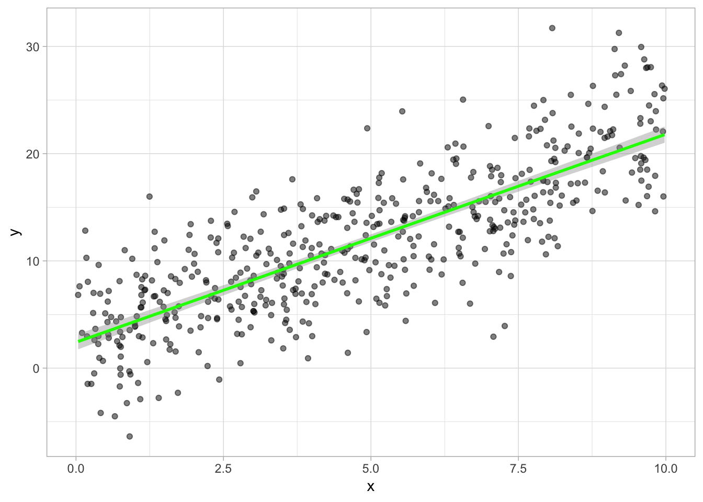
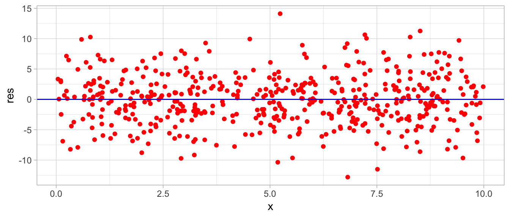

Chapter 6 Regression Basics
6.1 Ordinary Least Squares (OLS) Regression
In R, the Ordinary Least Squares (OLS) regression model is simply called the “linear model”, abbreviated lm. Regressions are run on several variables from a data.frame and stored as a lm object that we can inspect and modify.
set.seed=1 #makes 'random' draws reproducible
x<-runif(500,min=0,max=10) #500 draws from uniform distr
y<-2*x+rnorm(500,2,4)
my_df<-data.frame(x,y)
ggplot(my_df, aes(x=x,y=y))+
geom_point(alpha=0.5)+
geom_smooth(method="lm", color="green")+
xlim(c(0,10))+theme_light()
The syntax for running a regression in R is simple. We store the regression as an lm() object (e.g. called “my_reg”) and regress our dependent (mydf$y) variable on (~) the independent (my_df$x) variable.
my_reg<-lm(df$y~df$x)Alternatively, we can simply use the variable names from my_df and then tell R that the variables are coming from my_df:
my_reg<-lm(y~x, data = my_df)\[y=\beta_0+\beta_1 x\]
When we inspect our lm object, R simply prints the coefficients (“Intercept” for \(\hat{\beta_0}\)) and (“x” for \(\hat{\beta_1}\) on \(x\)):
my_reg##
## Call:
## lm(formula = y ~ x, data = my_df)
##
## Coefficients:
## (Intercept) x
## 2.009 2.055We can get a more detailed summary by running summary() on our lm object.
summary(my_reg)##
## Call:
## lm(formula = y ~ x, data = my_df)
##
## Residuals:
## Min 1Q Median 3Q Max
## -12.8557 -2.5953 0.0959 2.7723 12.2560
##
## Coefficients:
## Estimate Std. Error t value Pr(>|t|)
## (Intercept) 2.00888 0.37323 5.382 1.13e-07 ***
## x 2.05475 0.06362 32.299 < 2e-16 ***
## ---
## Signif. codes: 0 '***' 0.001 '**' 0.01 '*' 0.05 '.' 0.1 ' ' 1
##
## Residual standard error: 4.033 on 498 degrees of freedom
## Multiple R-squared: 0.6769, Adjusted R-squared: 0.6762
## F-statistic: 1043 on 1 and 498 DF, p-value: < 2.2e-16The summary() prints:
- The formula for the regression
- A 5 number summary of the distribution of the residuals
- Table of coefficients
- Column 1: Estimate for each \(\beta\)
- Column 2: Standard error of each \(\beta\)
- Column 3: \(t\)-statistic for each \(\beta\) with \(H_0: \, \beta=0\)
- Column 4: \(p\)-value for the \(t\)-test
- Regression Diagnostics
- Standard error of the regression (SER),
Rcalls itResidual standard error (RSE) R-squaredandAdjusted R-squared- “All \(F\)-test” where \(H_0: \text{ all } \beta\text{'s}=0\)
- Standard error of the regression (SER),
Inside the lm object my_reg is stored a lot of things that may not show up in the summary. To get a full inspection, check the structure with str().
str(my_reg)## List of 12
## $ coefficients : Named num [1:2] 2.01 2.05
## ..- attr(*, "names")= chr [1:2] "(Intercept)" "x"
## $ residuals : Named num [1:500] 0.697 -3.698 3.962 -0.943 1.215 ...
## ..- attr(*, "names")= chr [1:500] "1" "2" "3" "4" ...
## $ effects : Named num [1:500] -280.92 -130.25 4.03 -1.04 1.08 ...
## ..- attr(*, "names")= chr [1:500] "(Intercept)" "x" "" "" ...
## $ rank : int 2
## $ fitted.values: Named num [1:500] 17.23 20.21 16.37 10.26 8.96 ...
## ..- attr(*, "names")= chr [1:500] "1" "2" "3" "4" ...
## $ assign : int [1:2] 0 1
## $ qr :List of 5
## ..$ qr : num [1:500, 1:2] -22.3607 0.0447 0.0447 0.0447 0.0447 ...
## .. ..- attr(*, "dimnames")=List of 2
## .. .. ..$ : chr [1:500] "1" "2" "3" "4" ...
## .. .. ..$ : chr [1:2] "(Intercept)" "x"
## .. ..- attr(*, "assign")= int [1:2] 0 1
## ..$ qraux: num [1:2] 1.04 1.06
## ..$ pivot: int [1:2] 1 2
## ..$ tol : num 1e-07
## ..$ rank : int 2
## ..- attr(*, "class")= chr "qr"
## $ df.residual : int 498
## $ xlevels : Named list()
## $ call : language lm(formula = y ~ x, data = my_df)
## $ terms :Classes 'terms', 'formula' language y ~ x
## .. ..- attr(*, "variables")= language list(y, x)
## .. ..- attr(*, "factors")= int [1:2, 1] 0 1
## .. .. ..- attr(*, "dimnames")=List of 2
## .. .. .. ..$ : chr [1:2] "y" "x"
## .. .. .. ..$ : chr "x"
## .. ..- attr(*, "term.labels")= chr "x"
## .. ..- attr(*, "order")= int 1
## .. ..- attr(*, "intercept")= int 1
## .. ..- attr(*, "response")= int 1
## .. ..- attr(*, ".Environment")=<environment: R_GlobalEnv>
## .. ..- attr(*, "predvars")= language list(y, x)
## .. ..- attr(*, "dataClasses")= Named chr [1:2] "numeric" "numeric"
## .. .. ..- attr(*, "names")= chr [1:2] "y" "x"
## $ model :'data.frame': 500 obs. of 2 variables:
## ..$ y: num [1:500] 17.93 16.51 20.33 9.32 10.18 ...
## ..$ x: num [1:500] 7.41 8.86 6.99 4.02 3.38 ...
## ..- attr(*, "terms")=Classes 'terms', 'formula' language y ~ x
## .. .. ..- attr(*, "variables")= language list(y, x)
## .. .. ..- attr(*, "factors")= int [1:2, 1] 0 1
## .. .. .. ..- attr(*, "dimnames")=List of 2
## .. .. .. .. ..$ : chr [1:2] "y" "x"
## .. .. .. .. ..$ : chr "x"
## .. .. ..- attr(*, "term.labels")= chr "x"
## .. .. ..- attr(*, "order")= int 1
## .. .. ..- attr(*, "intercept")= int 1
## .. .. ..- attr(*, "response")= int 1
## .. .. ..- attr(*, ".Environment")=<environment: R_GlobalEnv>
## .. .. ..- attr(*, "predvars")= language list(y, x)
## .. .. ..- attr(*, "dataClasses")= Named chr [1:2] "numeric" "numeric"
## .. .. .. ..- attr(*, "names")= chr [1:2] "y" "x"
## - attr(*, "class")= chr "lm"Note that lm objects are actually lists, (data.frames are also lists), so we can extract elements of the list and subset using $ or [[]]. Some of the important elements of the list:
my_reg$coefficientsis a list of coefficientsmy_reg$residualsis a list comprised of the residual for eachxvaluemy_reg$fitted.valuesis a list comprised of the predicted/fitted value (\(\hat{y}\)) for eachxvalue
my_reg$coefficients # look at coefficients## (Intercept) x
## 2.008878 2.054752my_reg$residuals[1:5] # look at first 5 residuals## 1 2 3 4 5
## 0.6973776 -3.6984978 3.9621023 -0.9432491 1.2149809my_reg$fitted.values[1:5] # look at first 5 fitted.values## 1 2 3 4 5
## 17.231787 20.213383 16.371113 10.261878 8.961116These stored values will come in handy. We can run functions on them, for example, to discover things about the residuals:
summary(my_reg$residuals) # the same as the first thing printed in the regression output above!## Min. 1st Qu. Median Mean 3rd Qu. Max.
## -12.85568 -2.59527 0.09591 0.00000 2.77227 12.25596sd(my_reg$residuals) # the standard deviation of the residuals ## [1] 4.028697Since these are stored in lm as objects, we can also assign them to new columns in our original data.frame, my_df. This can be helpful for plotting with x, y, the residuals \(\epsilon\), and the predicted values \(\hat{y}\).
# save predicted values from model as "yhat"
my_df$yhat<-my_reg$fitted.values
# save residuals from model as "res"
my_df$res<-my_reg$residuals
# look at new dataframe
kable(head(my_df))| x | y | yhat | res |
|---|---|---|---|
| 7.408637 | 17.929164 | 17.231787 | 0.6973776 |
| 8.859711 | 16.514885 | 20.213383 | -3.6984978 |
| 6.989767 | 20.333215 | 16.371113 | 3.9621023 |
| 4.016544 | 9.318629 | 10.261878 | -0.9432491 |
| 3.383493 | 10.176097 | 8.961116 | 1.2149809 |
| 2.220068 | 3.193837 | 6.570566 | -3.3767291 |
There are also specific functions for assigning the predicted values and the residuals to a data.frame, using the lm object as the argument. They will produce the same result as above.
# save predicted values from model as "yhat"
my_df$yhat<-predict(my_reg)
# save residuals from model as "res"
my_df$res<-residuals(my_reg)
# we get the same result
head(my_df)## x y yhat res
## 1 7.408637 17.929164 17.231787 0.6973776
## 2 8.859710 16.514885 20.213383 -3.6984978
## 3 6.989767 20.333215 16.371113 3.9621023
## 4 4.016544 9.318629 10.261878 -0.9432491
## 5 3.383493 10.176097 8.961116 1.2149809
## 6 2.220068 3.193837 6.570566 -3.37672916.1.1 Diagnostics
Some of the regression diagnostics are stored (idiosyncratically) in the summary() object, and can be extracted by name:
summary(my_reg)$sigma # extract residual squared error (SER)## [1] 4.03274summary(my_reg)$r.squared # extract R^2## [1] 0.6768818summary(my_reg)$adj.r.squared # extract adjusted R^2## [1] 0.6762329summary(my_reg)$f # extract the F-statistic ## value numdf dendf
## 1043.231 1.000 498.000These might be useful if we wished to perform manual calculations using these statistics. As an example, if we wanted to calculate the correlation coefficient between \(X\) and \(Y\), and we know that \(R^2\) is the correlation coefficient squared:
R2<-summary(my_reg)$r.squared
sqrt(R2) ## [1] 0.8227282# compare to actual correlation coefficient
cor(my_df$x, my_df$y)## [1] 0.82272826.2 Prediction
We can use the model to make pedictions using the estimated regression model.
\[\hat{Y}=2.090+1.974X\]
x<-3
prediction<-my_reg$coef[1]+my_reg$coef[2]*x
prediction## (Intercept)
## 8.173133# multiple predictions
x<-c(1,3,7,10)
prediction<-my_reg$coef[1]+my_reg$coef[2]*x
prediction## [1] 4.063630 8.173133 16.392140 22.556395# alternatively, we can use the predict() function and insert
# a dataframe of our desired x values to predict y-hat
prediction2<-predict(my_reg, data.frame(x=c(1,3,7,10)))
prediction2## 1 2 3 4
## 4.063630 8.173133 16.392140 22.5563956.3 Residual Plots
For more, see Plotting{#04-plotting}.
ggplot(data = my_df, aes(x = x, y = res))+
geom_point(color="red")+
geom_hline(yintercept=0, color="blue")+ # add horizontal line at y=0
theme_light()
6.4 Regression Output Table
The broom package converts lm objects into a tidy data.frame that can easily be printed in a nice table using knitr’s kable() function for html output.
# install.packages("broom") # install first if you don't have
library(broom)
reg2<-tidy(my_reg)
kable(reg2)| term | estimate | std.error | statistic | p.value |
|---|---|---|---|---|
| (Intercept) | 2.008878 | 0.3732339 | 5.382356 | 1e-07 |
| x | 2.054752 | 0.0636164 | 32.299094 | 0e+00 |
stargazer(my_reg, type="html") | Dependent variable: | |
| y | |
| x | 2.055*** |
| (0.064) | |
| Constant | 2.009*** |
| (0.373) | |
| Observations | 500 |
| R2 | 0.677 |
| Adjusted R2 | 0.676 |
| Residual Std. Error | 4.033 (df = 498) |
| F Statistic | 1,043.231*** (df = 1; 498) |
| Note: | p<0.1; p<0.05; p<0.01 |